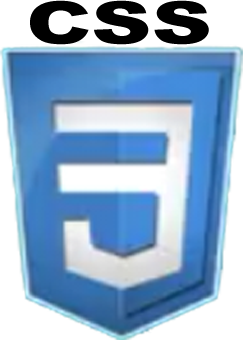
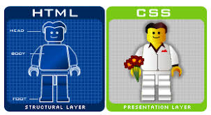

السلام عليكم و رحمة الله و بركاته ان كنت تبحث عن شرح مختص للغة الcss فستجد ماتريد في هذه الصفحة باذن الله .
Css هي اختصار لـ cascading style sheets معناها الحرفي هو صفحات الانماط المتراصه ، أو صفحات الأنماط الانسيابية. Css هي ليست لغة كما يعتقد الجميع هي عبارة عن صفحات تهتم بشكل وتنسيق صفحات الموقع، من ألوان وخطوط وخلفيات وضور وما إلى ذلك من إضافات جمالية للموقع.

سبب ظهور Css أن بعض المتصفحات لا تدعم بعض الأكواد الخاصة بجماليات الموقع، فكل متصفح يحتاج إلى كود مختلف عن الكود الذى يحتاجه متصفح آخر، وهذا من الصعوبة بمكان، وقت .. جهد .. أكواد !! . فظهرت الـ Css لتوحيد الأكواد لجميع المتصفحات، فلا تتغير من متصفح إلى متصفح آخر.
تقوم الـ Css بتنسيق الألوان والخلفيات والصور والخطوط المكتوبة متلاً بلغة الـ Html ، كما يمكن عمل التنسيق بلغة الـ Html دون الحاجة إلى صفحات Css خارجية، ولكن ذلك سيكون صعباً. فمن السهل واليسير والمفضل أيضاً والمعتمد عالمياً ، أن يكون التنسيق وصفحات الـ Css خارجية بعيداً عن أكواد الـ Html

تقوم الـ Css بفصل محتوى الصفحة عن مظهرها ولهذا مميزات عدة:
تجعل شكل الصفحة أسهل وأبسط بحيث تقوم بفصل محتوى الصفحة عن مظهرها، أى فصل أكواد الـ Html عن أكواد الـ Css
وتتيح لنا ايضاً وضع عدة مظاهر للمحتوى الواحد مما يلبي أذواق متعددة، ولنذكر هنا مثال لذلك ، كأن تصمم موقعاً لمن يتصفح من جهاز الكمبيوتر ، وموقعاً لمن يتصفح من الجوال ، وموقعاً لمن يتصفح من بلاك بيرى ، كل هذا باستخدام أكواد بسيطة وسهلة ، ويغنيك عن إعادة تصميم الموقع ثلاث مرات أو أكثر ليتناسب مع كل الأبعاد.
ملف الأنماط المكتوب بلغة الـ Css يمكن تضمينه في عدة صفحات بحيث عندما ترغب في تغيير الشكل فإنك تقوم بالتعديل في ملف واحد فقط مما يكون فيه سهولة وسرعةأاكبر في عمل التعديلات المطلوبه.
ان لغة Css يمكننا كتابتها من خلال أى محرر ، ابتداءً بالمفكرة NotePad .وهناك برامج تسهل عملية كتابة الـ Css ويختصر لك الكلمة لتكملها بكل سهولة، مثل الدريم ويفر Adobe Dream Weaver والاكسبريشن ويب. Microsoft Expression Web